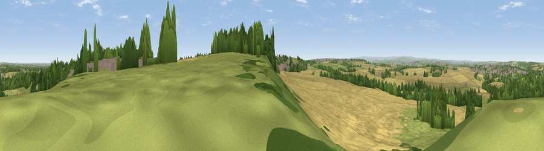

Viewpoint near Clifton
#17890 in England · top 23% of its area beats it · near CliftonThe view, rendered

A 360° render of this exact spot computed from the terrain model, tree cover and land cover — summer colours, afternoon light, calibrated against photographs of famous viewpoints. Real trees, hedges and buildings will differ in detail.
The panorama
Grey silhouette: terrain skyline in each direction (720 bearings, Earth curvature and refraction included). Dashed green: skyline with trees (+15 m) and buildings (+8 m) as obstacles. Blue strip: how far the ground is visible on each bearing.
Where the view opens
Wedge length = distance to the farthest visible ground on that bearing (vegetation-aware). Rings at 10, 25 and 50 km.
What fills the view
56% cropland · 26% grassland · 13% woodland · 5% built-up
Angular shares of the visible panorama (visual magnitude), not map area. Landscape diversity 0.47 (0–1 Shannon).
Key numbers
More beautiful places nearby
The staircase of upgrades: each row has a higher view potential than everything closer. Driving times are estimates from straight-line distance, calibrated against real road routing — check an actual route before setting out.
| Place | Direction | Drive | Score |
|---|---|---|---|
| Viewpoint near Clifton | SSE · 0 km | ~2 min | 58.9 |
| Viewpoint near Cadeby | N · 5 km | ~10 min | 60.5 |
| Viewpoint near Maltby | SE · 5 km | ~11 min | 70.8 |
| Viewpoint near Oughtibridge | W · 19 km | ~33 min | 72.5 |
| Viewpoint near Wharncliffe Side | W · 20 km | ~34 min | 75.2 |
| Viewpoint near Greenfield | W · 52 km | ~73 min | 76.0 |
| Viewpoint near Carrbrook | W · 53 km | ~74 min | 77.1 |
| Viewpoint near Otley | NNW · 57 km | ~79 min | 77.5 |
53.46069, -1.22242 · source: screening · position refined by local search. Computed location — check access rights before visiting.